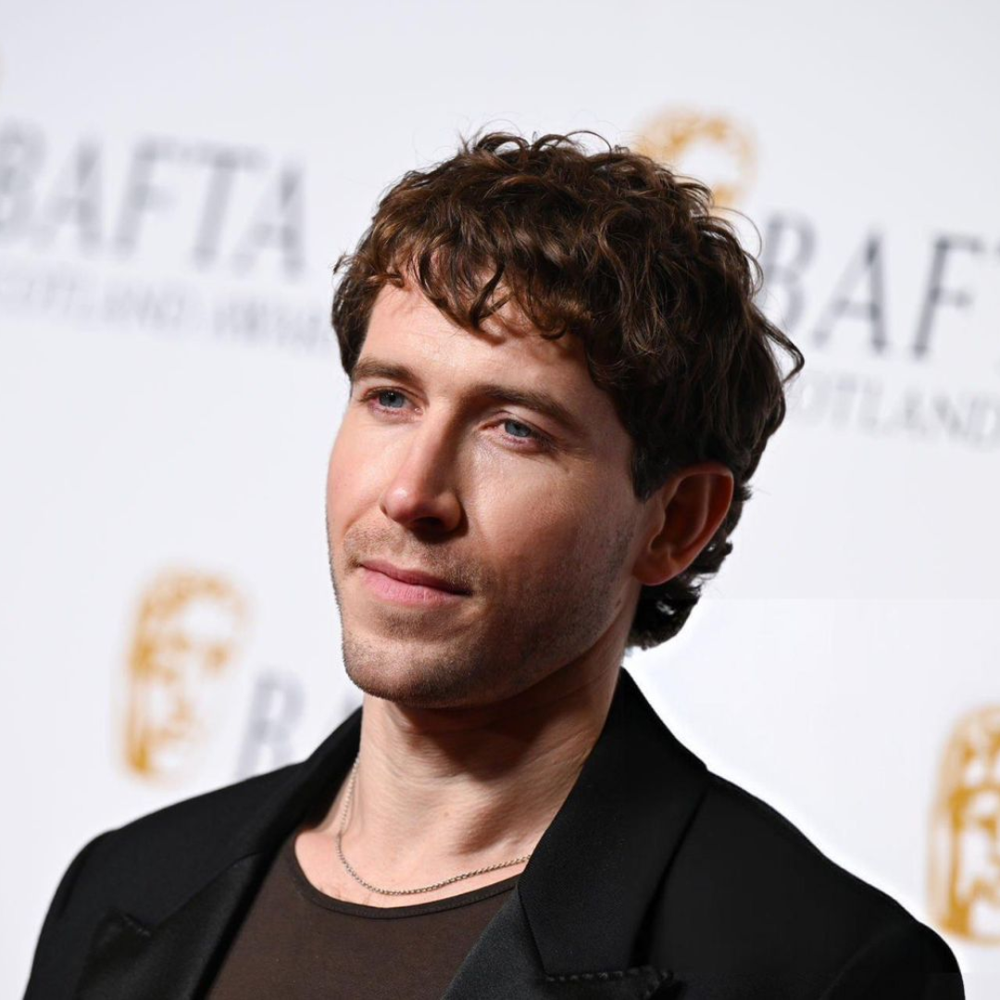
Christopher David Fulton (nascido em 27 de novembro de 1988) é um ator escocês.
Fulton cresceu em Castle Douglas em Dumfries e Galloway. Seus pais, David e Pauline, administram o King's Arms Hotel. Chris estudou no Royal Conservatoire of Scotland em Glasgow, graduando-se em 2012 com o título de Bacharel em Artes em Atuação.
Chris Fulton começou sua carreira com papéis como Ferg na adaptação de (2015) de 'Stonemouth' e Jay na minissérie de (2016) 'One of Us', ambas na BBC One. Ele então interpretou o banqueiro Charlie Lamont-Smith, o interesse amoroso de Phoebe (Ella-Rae Smith), na primeira temporada do thriller 'Clique' da BBC Three de (2017). No ano seguinte, Fulton fez sua estreia no cinema como Euan Bruce no épico medieval da Netflix 'Outlaw King', estrelado por Chris Pine como Robert the Bruce. Ele teve seu segundo papel no cinema como Danny na comédia dramática de (2019) Our Ladies.
Em 2020, Fulton começou a interpretar Sir Philip Crane no drama de época da Netflix, Bridgerton, uma adaptação dos romances de época da Regência de Julia Quinn. No ano seguinte, Fulton apareceu na segunda temporada da série de fantasia da Netflix, 'The Witcher', como o vilão Rience. Em agosto de 2022, Chris saiu de The Witcher antes de sua terceira temporada, e o papel de Rience foi assumido por Sam Woolf. Mais tarde, em 2022, Fulton se juntou ao elenco da série Outlander da Starz para sua sétima temporada como Rob Cameron, que foi ao ar em 2023. Ele também teve um pequeno papel como Karl na série 'The Lazarus Project' da Sky.
Fiquem ligados para atualizações!
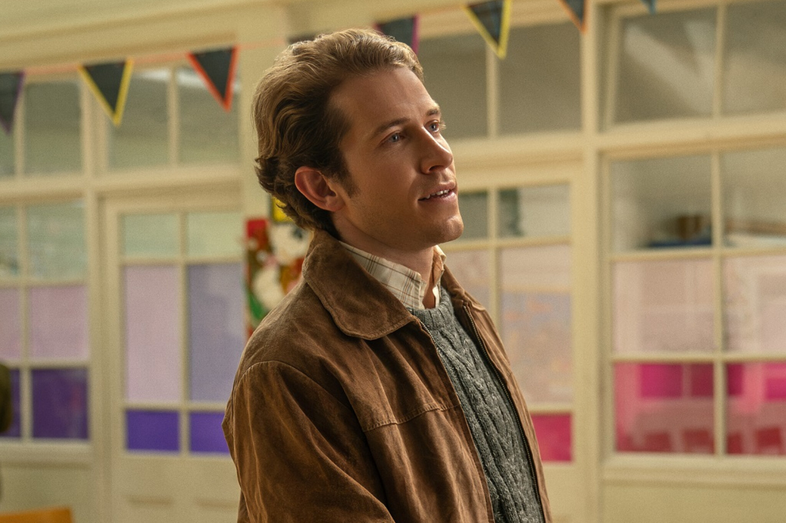
Chris Fulton como Rob Cameron em "Outlander"" (2024).
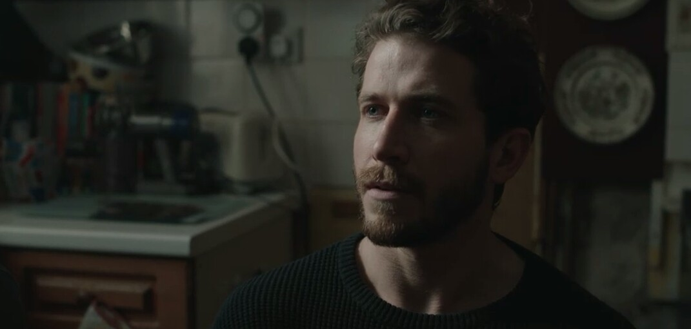
Chris Fulton como Ian em "Falling Into Place" (2024).
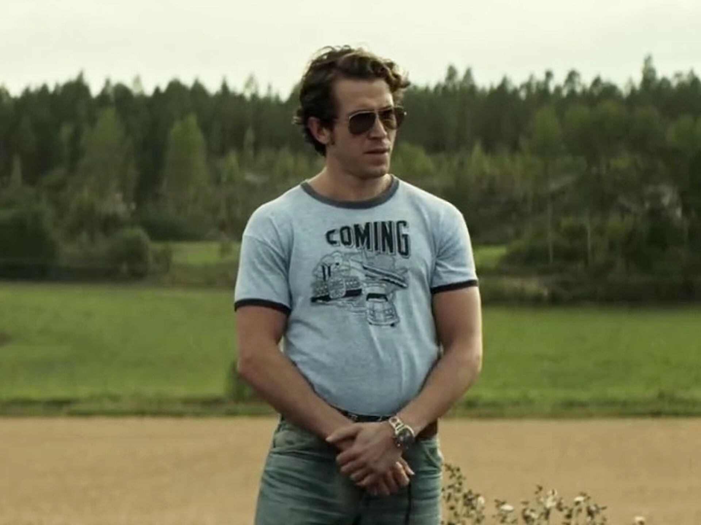
Chris Fulton como Phill Read em Ride Out (2024).
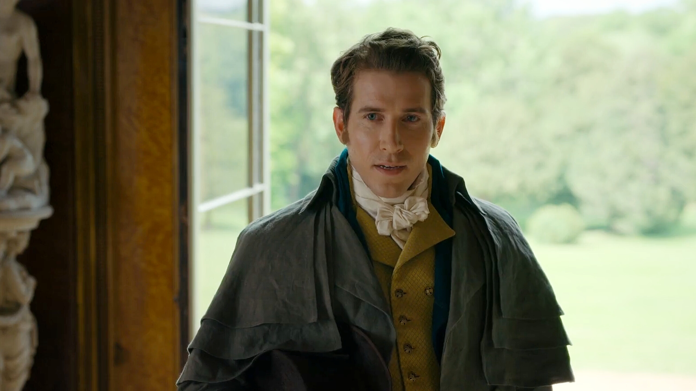
Chris Fulton como Sir Phillip Crane em "Bridgerton" (2020 - 2022).
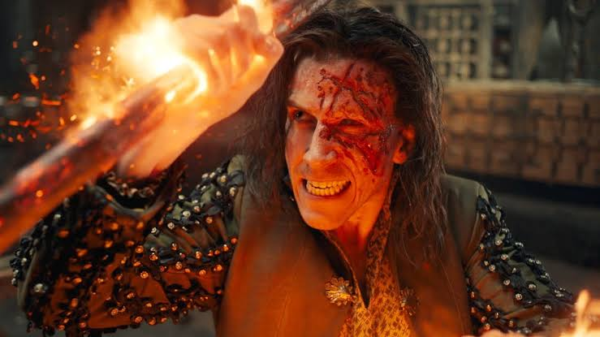
Chris Fulton como Rience em "The Witcher" (2021).
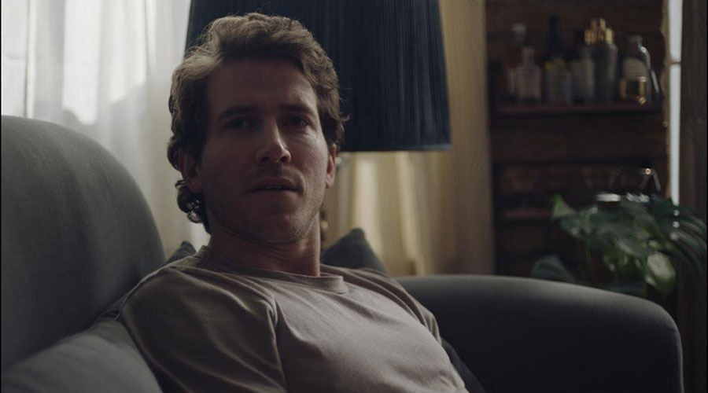
Chris Fulton como Gabriel em "In It Together" (2021).
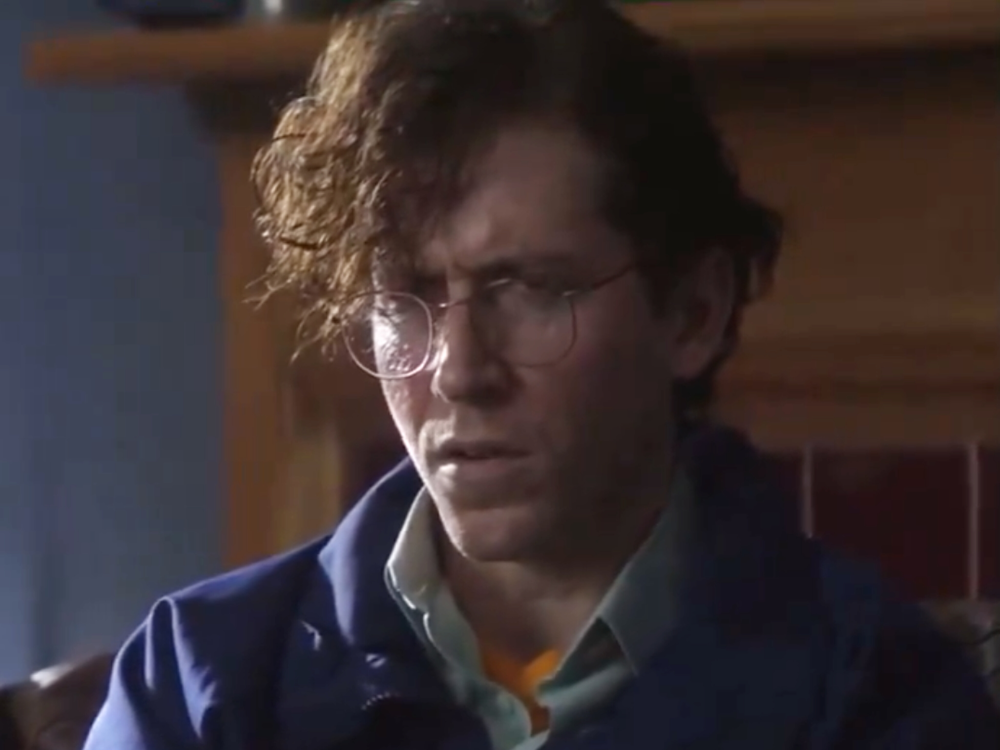
Chris Fulton como Dany em "Nossas Meninas" (2019).
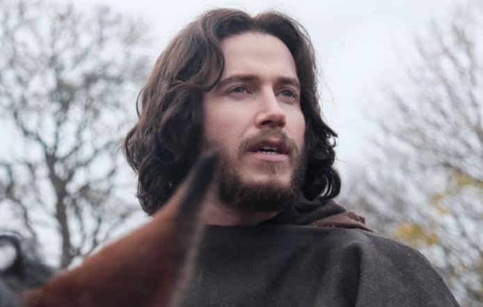
Chris Fulton como Euan Bruce em "Outlaw King" (2018).
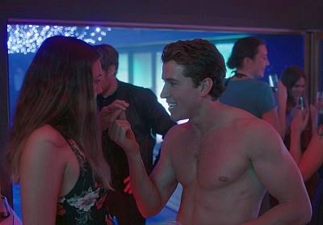
Chris Fulton como Adam Banks em "Clique" (2017).
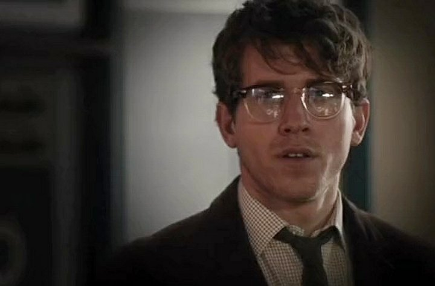
Chris Fulton como Dr. Broderick Castle em "Endeavour" (2017).
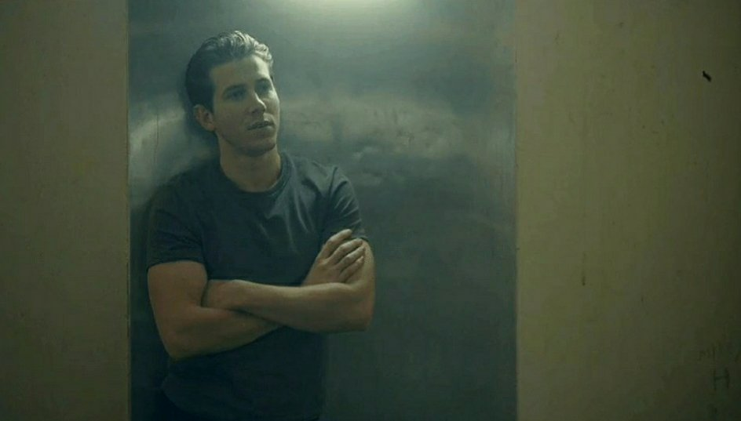
Chris Fulton como Jay em "Retribution" (2016).
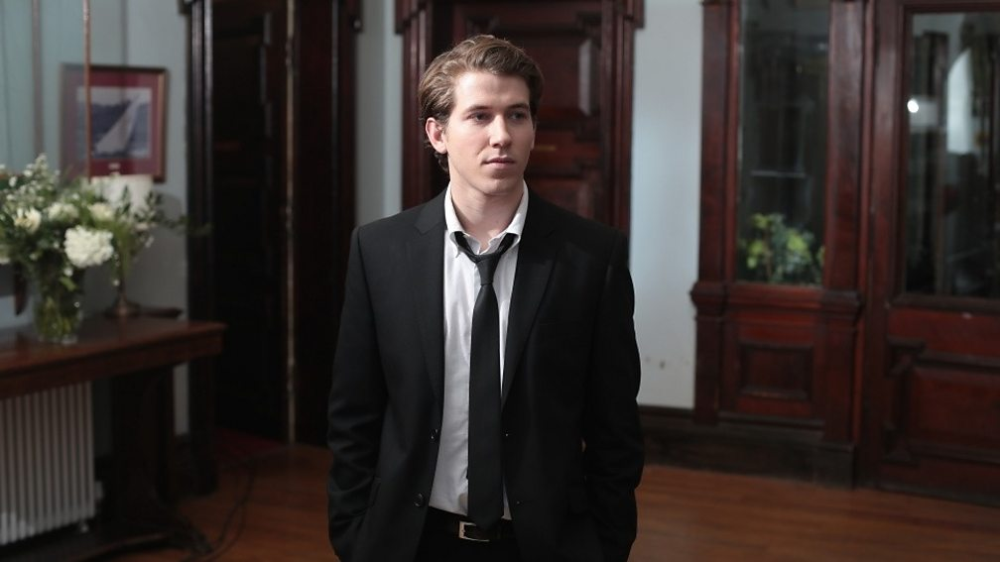
Chris Fulton como Ferg em "Stonemouth" (2015).